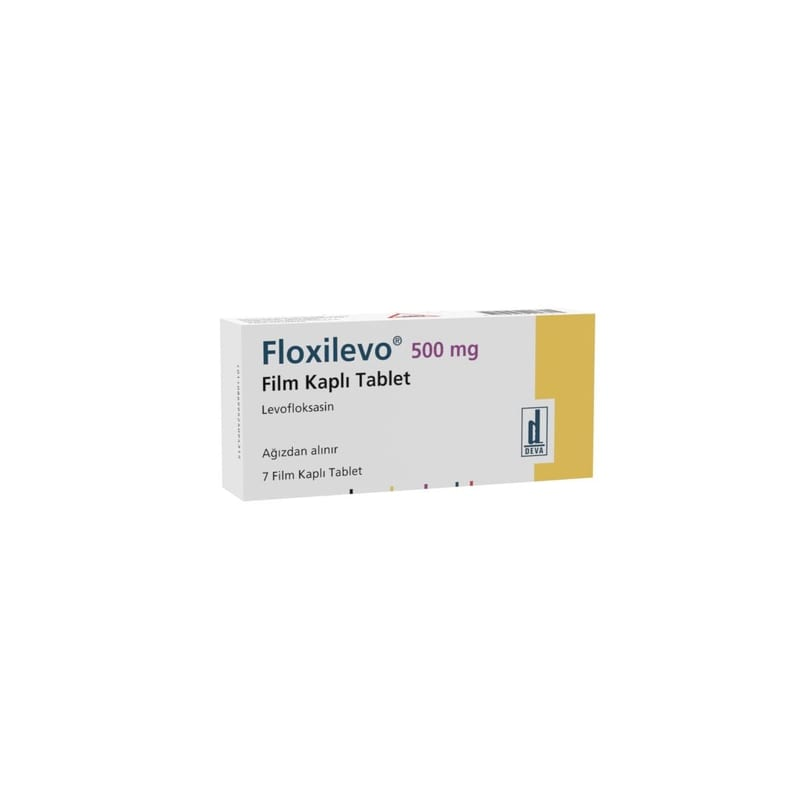

Floxilevo 500 mg Film Kaplı Tablet, 7 Adet

Ne için kullanılır
KT · Bölüm 1Bakterilerin neden olduğu yüz kemiklerinin içindeki hava boşluklarının akut iltihabı (akut bakteriyel sinüzit) ve kronik bronş iltihabının akut alevlenmesinde alternatif tedavi seçeneklerinin varlığında ciddi yan etki riski nedeniyle kullanılmamalıdır. Buna ilave olarak idrar yolu enfeksiyonlarında antibiyogramla duyarlık kanıtlanması gerekmektedir.
FLOXĠLEVO ağızdan alınır. FLOXĠLEVO beyaz film kaplı, kokusuz, homojen görünüĢlü, bir yüz ortadan çentikli diğer yüzü DEVA yazılı oblong tabletler Ģeklindedir. Ġlacınızın bir kutusu içinde her biri 500 mg levofloksasin içeren 7 adet film kaplı tablet bulunur. Doz ayarlamasını kolaylaĢtırmak için tablet çentiklidir.
FLOXĠLEVO bakterilere karĢı etkili bir antibiyotiktir. Florokinolonlar adı verilen antibiyotik grubuna dahildir. Bakterilerin büyümesini, çoğalmasını engeller ve bakterilerin yok olmasını sağlar.
FLOXĠLEVO etkin maddesi olan levofloksasine karĢı duyarlı olan bakterilerin neden olduğu enfeksiyonların tedavisinde kullanılır.
Doktorunuz FLOXĠLEVO’yu sizde aĢağıdaki durumlardan biri bulunduğu için reçete etmiĢ olabilir: Bakterilerin neden olduğu yüz kemiklerinin içindeki hava boĢluklarının akut iltihabı (sinüzit) Kronik bronĢ iltihabının akut alevlenmesi Toplumdan edinilmiĢ zatürre (pnömoni)
Ġdrar yolları ve böbrekte geliĢen iltihap (piyelonefrit) dahil, komplikasyonlu böbrek ve idrar yolu enfeksiyonları Prostat iltihabı Deri ve yumuĢak doku enfeksiyonları: Apse (irin kesesi), selülit, furonkül, impetigo (derinin bulaĢıcı, yüzeysel, mikrobik enfeksiyonu), piyoderma (irinli deri enfeksiyonu), yara enfeksiyonlarının neden olduğu komplikasyonsuz deri ve deri ekleri enfeksiyonları. Havaya karıĢmıĢ Ģarbon mikrobuna maruz kalma